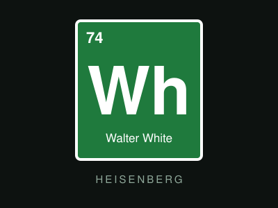
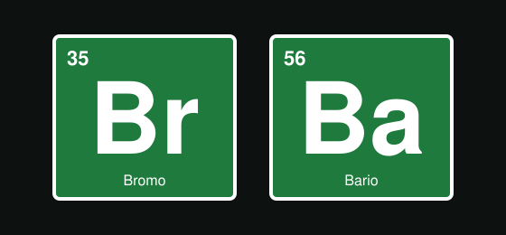
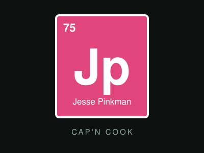
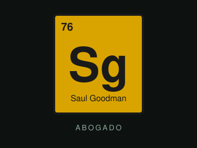
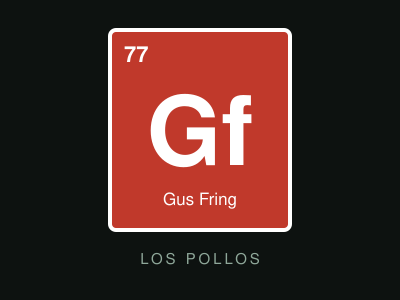
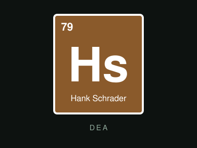

Walter White
Bryan Cranston
Profesor de química
que se convierte en Heisenberg.

Cuando la química cambia a un hombre,
nada vuelve a ser igual.
Walter White es un profesor de química de secundaria en Albuquerque, Nuevo México. Su vida cambia cuando le diagnostican un cáncer de pulmón. Con poco dinero y una familia que mantener, decide asociarse con Jesse Pinkman, un antiguo alumno, para fabricar metanfetamina.
Lo que empieza como una decisión desesperada se convierte en la transformación de un hombre común en Heisenberg.
La serie combina drama, humor negro y suspenso, y destaca por su guion, su fotografía y por la manera en que cada decisión tiene consecuencias.

Bryan Cranston
Profesor de química
que se convierte en Heisenberg.

Aaron Paul
Exalumno de Walter
y su socio en el negocio.

Bob Odenkirk
Abogado de oficina llamativa
y soluciones creativas.

Giancarlo Esposito
Dueño de Los Pollos Hermanos
y rival calculador.

Dean Norris
Agente de la DEA
y cuñado de Walter.
| Temporada | Año | Episodios |
|---|---|---|
| 1 | 2008 | 7 |
| 2 | 2009 | 13 |
| 3 | 2010 | 13 |
| 4 | 2011 | 13 |
| 5 | 2012 - 2013 | 16 |
Total: 62 episodios en 5 temporadas.
"Say my name."
Walter White
"I am the one who knocks."
Walter White
"Yeah, science!"
Jesse Pinkman
Creador: Vince Gilligan
Canal: AMC
Emisión: del 20 de enero de 2008 al 29 de septiembre de 2013
Ambientación: Albuquerque, Nuevo México
Derivados: Better Call Saul (2015 - 2022) y la película El Camino (2019)